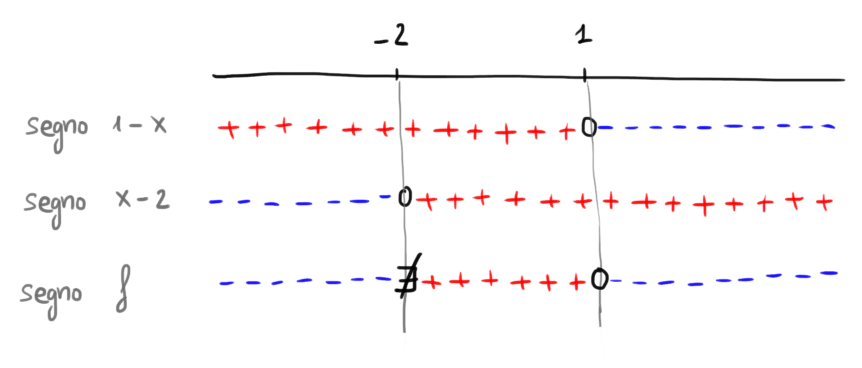
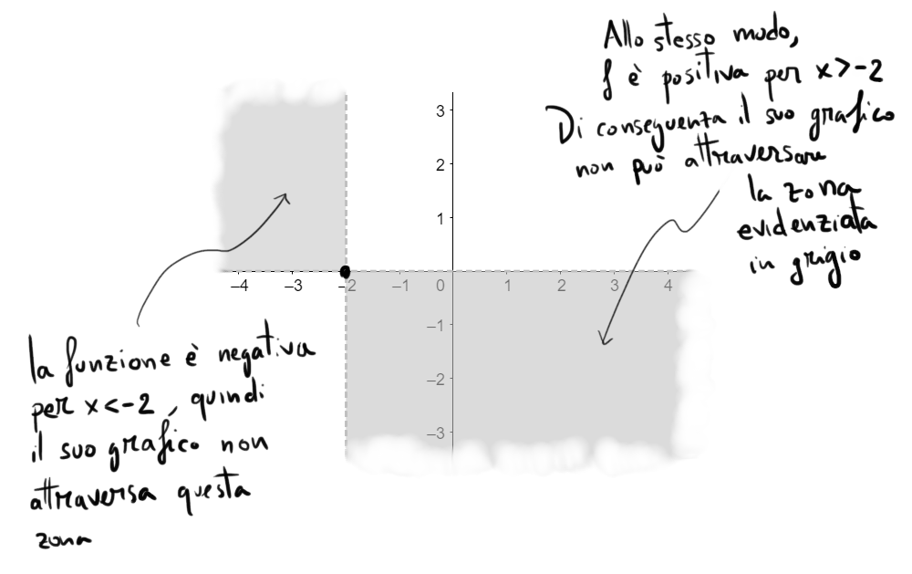
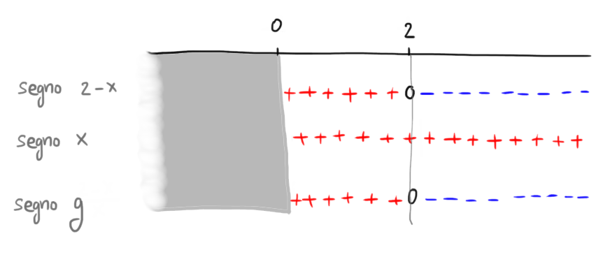
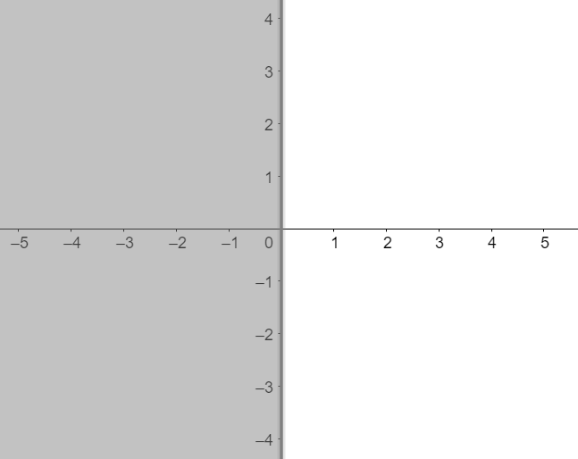
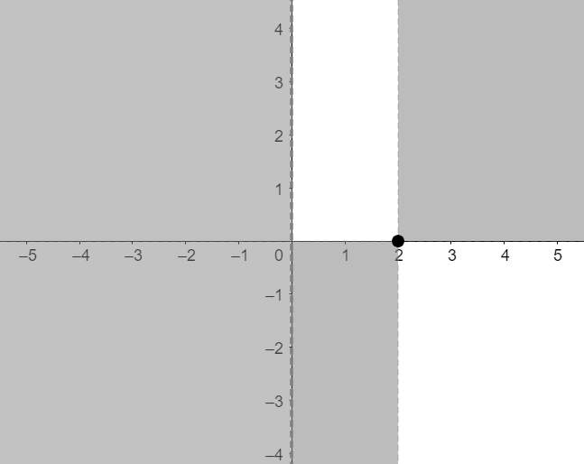

Introduzione
Nei quattro paragrafi precedenti è stato illustrato il concetto di dominio di una funzione,
ovvero l'insieme di valori per i quali è definita.
L'obiettivo di questo paragrafo è imparare a svolgere lo studio del
segno di una funzione al variare del valore di \(x\).
Trascinando il punto
nel seguente grafico interattivo è possibile visualizzare
i valori assunti dalla funzione al variare della \(x\).
\[
f(\color{blue}{}-8\color{black}{}) = \color{red}{}2
\]
Provate a rispondere a queste tre domande:
-
Per quali valori di \(x\) la funzione assume segno positivo?
Ovvero, per quali \(x\) si ha \(f(x) \boldsymbol{\gt} 0\)?
-
Per quali valori di \(x\) la funzione assume segno negativo?
Ovvero, per quali \(x\) si ha \(f(x) \boldsymbol{\lt} 0\)?
-
Per quali valori di \(x\) la funzione vale \(\boldsymbol{0}\)?
Ovvero, per quali \(x\) si ha \(f(x) \boldsymbol{=} 0\)?
Segno di una funzione al variare di \(x\)
Esempio 1
Consideriamo la funzione
\[
f(x) = \dfrac{1 -x}{2 +x}
\]
Dominio
Per individuare il dominio è sufficiente "mettere in sicurezza" l'unica operazione pericolosa che compare
nella definizione di \(f\), la frazione.
Il suo denominatore deve essere diverso da \(0\):
\[
2 + x \neq 0 \,\,\,\Longrightarrow\,\,\, x \neq -2
\]
Di conseguenza il dominio di \(f\) è
\[
D = \left(-\infty\,;\,\,-2\right) \cup \left(-2\,;\,\,+\infty\right)
\]
Studio del segno
Vogliamo determinare per quali valori della \(x\) la funzione
-
assume segno positivo
-
assume segno negativo
-
vale \(\boldsymbol{0}\)
Iniziamo dalla prima domanda. Chiediamoci perciò per quali valori di \(x\) si ha \(f(x) \gt 0\), ovvero:
\[
\dfrac{1 -x}{2 +x} \gt 0
\]
Analizziamo come varia il segno del numeratore al variare della \(x\).
\[
\begin{align*}
1 -x \gt 0 \,\,\,&\Longrightarrow\,\,\, -x \gt -1
\\\\
&\Longrightarrow x \lt 1
\end{align*}
\]
Analizziamo il segno del denominatore.
\[
2 + x \gt 0 \,\,\,\Longrightarrow\,\,\, x \gt -2
\]
Inseriamo le informazioni ottenute nel grafico dei segni:

Da questo grafico leggiamo come varia il segno di \(f\) al variare del valore assunto dalla \(x\).
Possiamo quindi rispondere alle tre domande iniziali:
-
la funzione è positiva se \(x \in \left(-2\,;\,\,1\right)\)
-
la funzione è negativa se \(x \in \left(-\infty\,;\,\,-2\right) \cup \left(1\,;\,\,+\infty\right)\)
-
la funzione vale \(\boldsymbol{0}\) se \(x = 1\)
Osserviamo un fatto.
-
Se la funzione è positiva, il suo grafico si trova sopra l'asse delle \(x\).
-
Se la funzione è negativa, il suo grafico si trova sotto l'asse delle \(x\).
-
Se la funzione vale \(\boldsymbol{0}\), il suo grafico interseca l'asse \(\boldsymbol{x}\).
(Per convincervi, riguardate il grafico interattivo all'inizio de paragrafo).
Questo ci permette di cancellare delle zone del piano cartesiano che sicuramente non sono attraversate dal grafico di \(f\)

Esempio 2
Consideriamo la funzione
\[
g(x) = ln\left(\dfrac{2}{x}\right)
\]
Dominio
Nella definizione di \(g\) intervengono due operazioni pericolose, il logaritmo e la frazione.
-
chiediamo che l'argomento del logaritmo \(ln\left(\frac{2}{x}\right)\) sia positivo:
\[
\dfrac{2}{x} \gt 0
\]
siccome al numeratore abbiamo un numero positivo, \(2\), la frazione risulterà positiva
se il denominatore è maggiore di \(0\).
\[
\dfrac{2}{x} \gt 0 \,\,\,\Longleftrightarrow\,\,\, x \gt 0
\]
Il logaritmo è definito per
\[
x \in \left(0\,;\,\,+\infty\right)
\]
-
chiediamo che il denominatore della frazione \(\frac{2}{x}\) sia diverso da \(0\):
\[
x \neq 0
\]
La frazione è definita per
\[
x \in \left(-\infty\,;\,\,0\right) \cup \left(0\,;\,\,+\infty\right)
\]
Prendendo l'interserzione tra gli intervalli di definizione del logaritmo e della frazione otteniamo
il dominio di \(f\)
\[
D = \left(0\,;\,\,+\infty\right)
\]
⚠️⚠️
Siccome la funzione è definita solo per valori di \(x\) positivi, nello studio del segno che segue
cancelleremo la zona della retta reale corrispondente all'intervallo \(\big(-\infty\,;\,\,0\big]\)
Segno della funzione
Vogliamo determinare per quali valori della \(x\) la funzione
-
assume segno positivo
-
assume segno negativo
-
vale \(\boldsymbol{0}\)
Iniziamo dalla prima domanda. Chiediamoci perciò per quali valori di \(x\) si ha \(g(x) \gt 0\), ovvero:
\[
ln\left(\dfrac{2}{x}\right) \gt 0
\]
usiamo il membro sinistro e destro della disequazione come esponenti da assegnare ad \(e\)
\[
\begin{align*}
e^{ln\left(\frac{2}{x}\right)} \gt e^{0} \,\,\,&\Longrightarrow\,\,\, \dfrac{2}{x} \gt 1
\\\\
&\Longrightarrow\,\,\, \dfrac{2}{x} - 1 \gt 0
\\\\
&\Longrightarrow\,\,\, \dfrac{2 - x}{x} \gt 0
\end{align*}
\]
Analizziamo il segno del numeratore:
\[
\begin{align*}
2 -x \gt 0 \,\,\,&\Longrightarrow\,\,\, -x \gt -2
\\\\
x \lt 2
\end{align*}
\]
Analizziamo il segno del denominatore:
\[
x \gt 0
\]
Disegnamo il grafico dei segni

Da questo grafico leggiamo come varia il segno di \(g\) al variare del valore assunto dalla \(x\).
Possiamo quindi rispondere alle tre domande iniziali:
-
la funzione è positiva se \(x \in \left(0\,;\,\,2\right)\)
-
la funzione è negativa se \(x \in \left(2\,;\,\,+\infty\right)\)
-
la funzione vale \(\boldsymbol{0}\) se \(x = 2\)
Grafico
Siccome il dominio è \(D = \left(0\,;\,\,+\infty\right)\), il grafico di \(g\) non attraversa la zona del piano cartesiano
corrispondente all'intervallo \(\big(-\infty\,;\,\,0\big]\). La cancelliamo:

Sfruttiamo anche le informazioni sul segno di \(g\) per localizzare ulteriormente il grafico
-
\(g\) è positiva se \(x \in \left(0\,;\,\,2\right)\), quindi in corrispondenza di quest'intervallo
la funzione passa sopra l'asse delle \(x\).
-
\(g\) è negativa se \(x \in \left(2\,;\,\,+\infty\right)\), quindi in corrispondenza di quest'intervallo
la funzione passa sotto l'asse delle \(x\).
-
la funzione vale \(\boldsymbol{0}\) se \(x = 2\), quindi segnamo un pallino pieno in corrispondenza del
punto \(\left(2\,;\,\,0\right)\)
